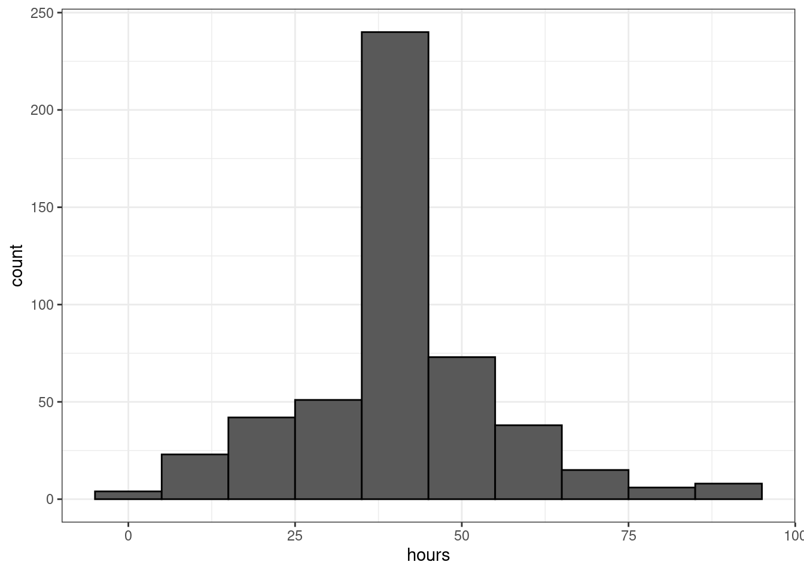
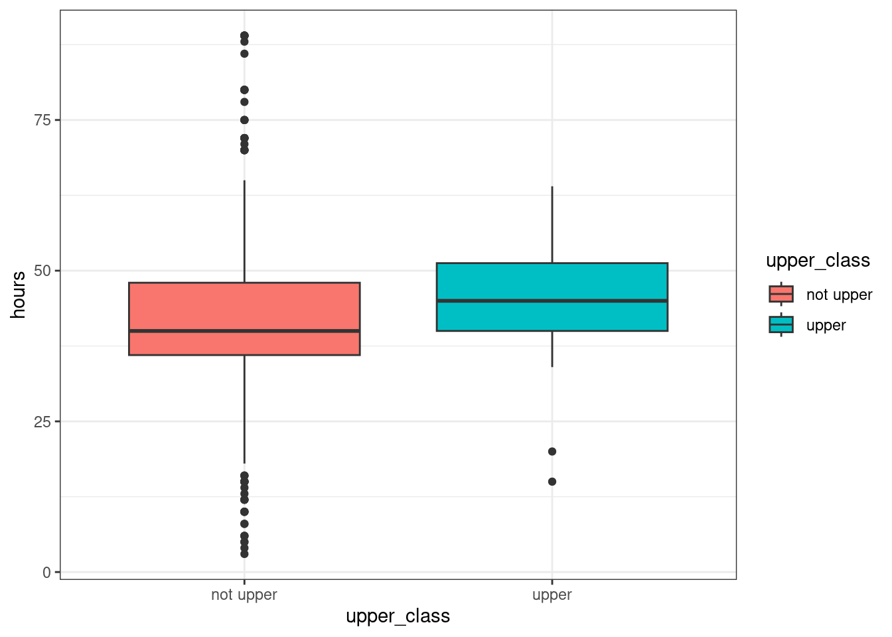
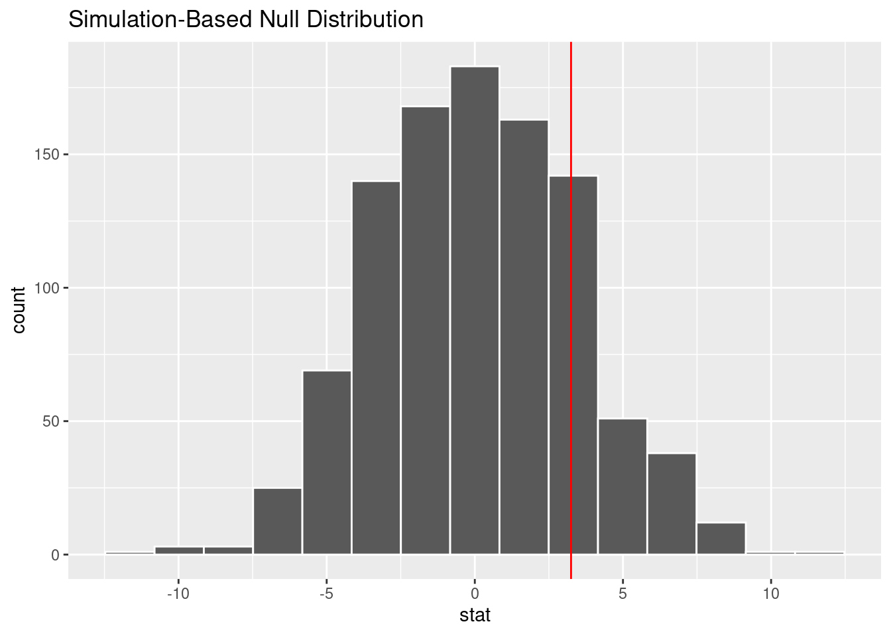
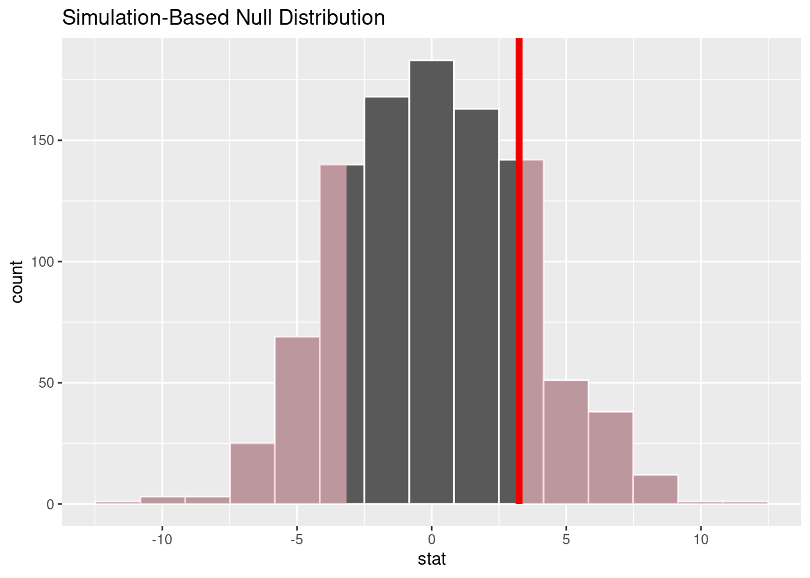

library(tidyverse)
library(infer)
library(kableExtra)
library(openintro)
library(broom)
gss <- gss |>
mutate(upper_class = ifelse(class == "upper class", "upper", "not upper")) |>
mutate(class = factor(class))MTH 142: R Assignment 4
Load packages
In this lab, we will explore and visualize the data using the tidyverse suite of packages, and perform statistical inference using infer. The data can be found in the companion package for OpenIntro resources, openintro.
Let’s load the packages.
Two Independent Means
Our motivating data comes from the General Social Survey (GSS) from the openintro package. The General Social Survey is a high-quality survey which gathers data on American society and opinions, conducted since 1972. This data set is a sample of 500 entries from the GSS, spanning years 1973-2018, including demographic markers and some economic variables. The two variables of interest are hours worked the week before the survey and self-identified social class.
The hours variable is in whole numbers and is truncated at 89. We will only look at two social classes: upper class, and not upper class.
hours: numbers range from (0 to 89)upper_class: self-identified social class (upper, not upper)
We’ll take a look at how many hours worked in a week by people who took the survey, and whether it is associated with their social class or not.
The distribution of hours worked per week is shown in this histogram. The distribution has a predominate peak around 40, and looks roughly symmetric.
ggplot(data = gss, aes(x = hours)) +
geom_histogram(binwidth = 10, color = "black") +
theme_bw()
In our analysis we want to evaluate if the mean hours worked in a week differs between the self-identified upper class and non-upper class groups. First, we set our hypotheses. Our null hypothesis should state the status quo, in other words, “there is nothing going on.” In context, this means no difference between the average hours worked in a week between the two groups. The alternative hypothesis says that the average hours worked in week for the two groups is different.
\(H_0: \mu_{upper} - \mu_{not} = 0\)
\(H_A: \mu_{upper} - \mu_{not} \neq 0\)
Let’s take a look at how these groups compare using a boxplot. The data live in two columns, upper_class and hours. We map upper_class to the x-axis and fill color. We also map hours to the y-axis to create the boxes. The geom_boxplot() layer specifies what type of plot we wish to create.
ggplot(gss, aes(x = upper_class, y = hours, fill = upper_class))+
geom_boxplot()+
theme_bw()
We can also create summary statistics for the two groups to get a sense of how different they are. In the following sequence of commands we use the group_by() function to separate the data set into the two class groups. Next we use the summarize() function to calculate different summary statistics. For each group we calculated the number of observations, mean, standard deviation, minimum, and maximum.
gss |>
group_by(upper_class) |>
summarize(n = n(), mean =mean(hours),
sd = sd(hours),
min = min(hours), max = max(hours))# A tibble: 2 × 6
upper_class n mean sd min max
<chr> <int> <dbl> <dbl> <dbl> <dbl>
1 not upper 480 41.3 14.9 3 89
2 upper 20 44.5 12.7 15 64We can calculate the difference of these two means hypothesis test using a significance level of \(\alpha = 0.05\). Just like we did with a single proportion, and two proportions we can use the infer package to do this. The infer package uses a workflow to generate a null distribution for our data. Recall that this package uses verbs as function names that describe each step that is happening.
specify()the variables of interest in your data frame.hypothesize()set the null hypothesis.generate()replicates of bootstrap resamples with replacement.calculate()the summary statistic of interest.visualize()the resulting bootstrap distribution and confidence interval.
To calculate the difference in means we will use the specify() and calculate() functions. The specify() needs both column names that we are using separated by a tilde. The outcome variable is to the left of the tilde, and the grouping variable is on the right hand side. We next use the caluclate() function. In the calculate() function we also must specify the order of how we are taking the difference. In this case we want \(\overline{x}_{upper} - \overline{x}_{not}\) to match our hypotheses set up. We use the unlist() function to store the difference in means as a simple object.
diff_mean <- gss |>
specify(hours ~ upper_class) |>
calculate(stat = "diff in means", order = c("upper", "not upper")) |>
unlist()
diff_mean stat
3.247917 The inference chain should also look familiar. We will take steps to generate 1000 data sets that we might see if \(H_0\) was true and calculate a difference in means for each hypothetical data set.
We use the specify() function to specify the variable of interest. We use the hypothesize() function to indicate what the hypothesized value is under \(H_0\). In this case we are interested in a test for a difference in means. If there was no difference in teaching method we would see that \(\mu_{diff} = \mu_{upper} - \mu_{not} = 0\), which is what we specified in \(H_0\). We set the null argument to “independence” to specify this.
The next function generate() generates data sets under different settings. We set the argument type equal to “permute” to create new data sets were we switch the group labels randomly. This generates data sets might expect to obtain if the \(H_0\) was true. The argument reps dictates how many data sets to generate. Generally 1000 or more is a good guideline.
The function calculate() is used to generate an appropriate summary statistic. We are interested in the difference in means so we will set the stat argument to “diff in means”. We need to use the same order of groups as before. This function returns the `what-if’ values we might expect if the true difference means for the two groups was 0.
\[\mu^*_{diff,1}, \mu^*_{diff,2}, \dots, \mu^*_{diff,1000}\] We preview these hypothetical values below.
set.seed(041624)
diff_ht_mean <-gss |>
specify(hours ~ upper_class) |>
hypothesize(null = "independence") |>
generate(reps = 1000, type = "permute") |>
calculate(stat = "diff in means", order = c("upper", "not upper"))
diff_ht_meanResponse: hours (numeric)
Explanatory: upper_class (factor)
Null Hypothesis: independence
# A tibble: 1,000 × 2
replicate stat
<int> <dbl>
1 1 -0.867
2 2 1.27
3 3 -3.84
4 4 -1.18
5 5 -2.27
6 6 -3.57
7 7 2.47
8 8 -4.30
9 9 6.69
10 10 -0.658
# ℹ 990 more rowsWe next visualize our null distribution using the function visualize(). This produces a histogram of our `what-if’ values. We can add a vertical red line indicating where our actual data falls using the function geom_vline().
diff_ht_mean |> visualize() +
geom_vline(xintercept = diff_mean, color = "red")
The method we used to generate the histogram above is called randomization test. Null distributions can be computed via a mathematical model, or by the computer using this technique. Null distributions represent the values for \(\overline{x}_{diff}\) we would see if \(H_0\) was true.
From this null distribution we are now able to find our p-value and make a conclusion. The p-value is calculated by counting the number of simulated statistics that are more extreme then the difference in means we calculated with our original data set. The infer package has a function to calculate this value called get_p_value(). In this function you must supply the sample statistic for your original data set, which we named diff_mean. This function has an additional argument called direction which indicates the alternative hypothesis.
diff_ht_mean |> get_p_value(obs_stat = diff_mean, direction = "two-sided")# A tibble: 1 × 1
p_value
<dbl>
1 0.35We can also use the visualize() and shade_p_value() functions together to visualize how the p-value was calculated.
diff_ht_mean |> visualize() +
shade_p_value(obs_stat = diff_mean, direction = "two-sided")
We observed a p-value of 0.35 which is greater than our significance level of \(\alpha = 0.05\). We fail to reject the null hypothesis. It does not appear that there is a significant difference in average hours worked in a week between the self-identified upper class group and the rest of population.
Questions: Two Independent Means
We will continue using the gss data set. This time we are considering ages and political party affiliation. We will use the adjusted data set below.
gss <- gss |>
mutate(ind_party = ifelse(partyid == "ind", "ind", "not ind")) |>
mutate(partyid= factor(partyid))We are interesting in testing if the average age of those who are registered as ‘independent’ is significantly different from the other groups. The two columns of interest are ind_party and age.
Type the hypotheses in symbols.
Construct a plot to visualize the distribution of ages between the two groups.
Compute the difference in means for the two groups.
Set up an infer chain to calculate 1000 differences in proportions under the null hypotheses.
set.seed(4)Graph and mark the observed difference in means.
Calculate the p-value. Using \(\alpha = 0.05\), what is your conclusion?